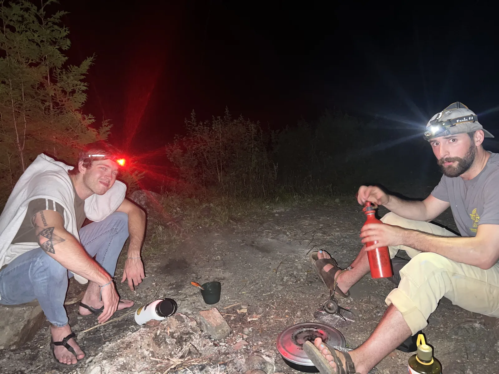

Hi, I'm
George
Spatialist,
Outdoorsman,
and Environmentalist


I've always followed what's interested me, and doing so has led me on an incredible journey, both personally and professionally. I'm currently into snowboarding, overlanding, photography, rock climbing, studying financial markets, conservation, sustainability, global risks, and volunteering. Whether it's a new hobby, subject, or language (spoken or programmed), I'm always diving into something.
Download CVInterested in working together? Or curious about something?
I would be more than happy to connect with you
georgew330@gmail.com